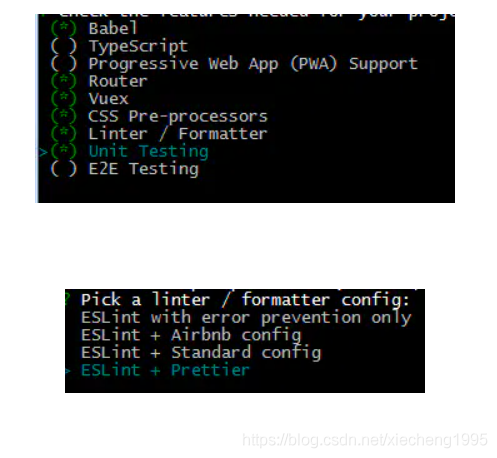

前言
使用eslint+prettier好处：
利用Vue-cli3建立Vue项目时，一定要选上Linter/Formatter，然后选择 ESLint + Prettier

1. 安装vscode插件
首先在vscode中安装如下插件：
.prettierrc
在文件根目录下创建.prettierrc对prettier格式化进行自定义规则设置，以下为我添加的规则
{
/* 单引号包含字符串 */
"singleQuote": true,
/* 不添加末尾分号 */
"semi": false,
/* 在对象属性添加空格 */
"bracketSpacing": true,
/* 优化html闭合标签不换行的问题 */
"htmlWhitespaceSensitivity": "ignore",
/* 只有一个参数的箭头函数的参数是否带圆括号（默认avoid） */
"arrowParens": "avoid"
}
.editorconfig
在文件根目录下创建.editorconfig，内容如下：
root = true
[*]
charset = utf-8
# 缩进风格为空格
indent_style = space
# 缩进大小为4
indent_size = 4
## 表示以Unix风格的换行符结尾
# end_of_line = lf
# insert_final_newline = true
# # 设为true表示会除去换行行首的任意空白字符。
# trim_trailing_whitespace = true